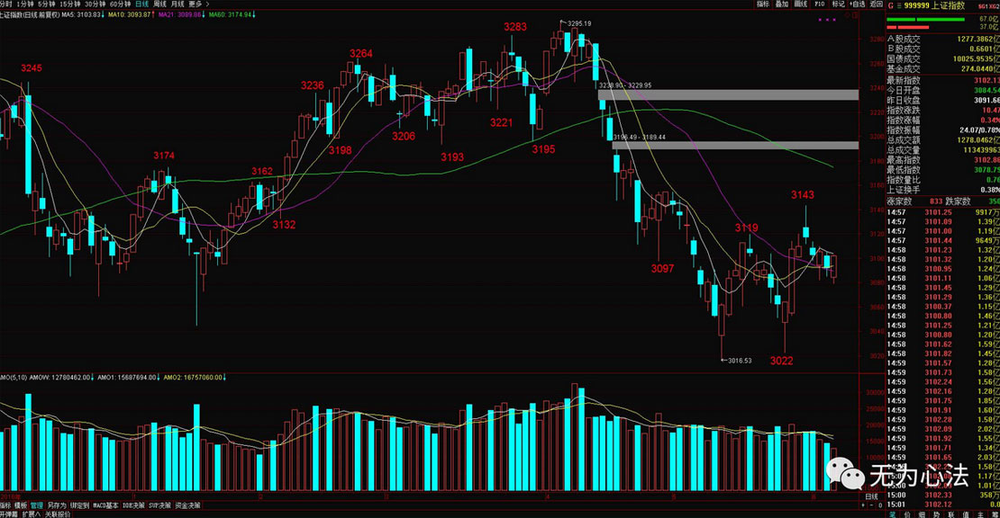

6月6日 无为收评 极度缩量 大盘是漫漫长夜还是黎明前的黑暗？
2017年6月5日14次浏览
原创语音收评，点击收听
03:50每日回顧
两市早盘呈现冲高回落的态势，军工板块率先走强，随后超跌品种早盘表现活跃，市场的风险偏好有所下降，临近午间收盘，指数再度回落，午后市场的成交量进一步缩小，雄安新区和次新股均有杀跌的动作，尾盘上证50率先发力，指数回升，个股涨多跌少。
从盘面上看，蓝筹股总仅石油板块小幅收跌，其余均呈反弹走势，家电、酿酒、保险等涨幅居前，尾盘各大板块共振发力，沪指收复3100点，题材上雄安、次新分化明显，增持、壳资源等相对出色，中小板领跑反弹。
截至收盘，两市共2001只个股上涨，32只个股涨停，除新股外涨停18只；841只个股下跌，7只个股跌停
每日回顧
两市早盘呈现冲高回落的态势，军工板块率先走强，随后超跌品种早盘表现活跃，市场的风险偏好有所下降，临近午间收盘，指数再度回落，午后市场的成交量进一步缩小，雄安新区和次新股均有杀跌的动作，尾盘上证50率先发力，指数回升，个股涨多跌少。
从盘面上看，蓝筹股总仅石油板块小幅收跌，其余均呈反弹走势，家电、酿酒、保险等涨幅居前，尾盘各大板块共振发力，沪指收复3100点，题材上雄安、次新分化明显，增持、壳资源等相对出色，中小板领跑反弹。
截至收盘，两市共2001只个股上涨，32只个股涨停，除新股外涨停18只；841只个股下跌，7只个股跌停
在大部分股民印象中，“炒股高手”颇有些武侠小说中世外高人的意味，他们身手不凡，异常低调，神龙见首不见尾，一出手便掀起资本市场上的血雨腥风。实际上，股市里没有神，除了一点点运气之外，更多是靠勤奋和努力。卓越不凡的成绩背后，往往是一些不足与外人道的辛苦。他们坚持长跑，只为简单地做好投资这件事情。所谓的成功，只是一个结果，它也许水到渠成，也许永无来日。